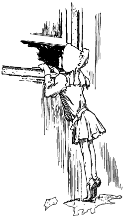
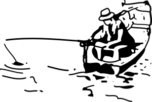

Проверка технологий HTML5

Когда ваш браузер отображает веб-страницу, он создаёт объектную модель документа (Document Object Model, DOM) — набор объектов, представленных HTML-элементами на странице. Каждый элемент — каждый <p>, каждый <div> и каждый <span> — показан в DOM самостоятельным объектом (есть также глобальные объекты, вроде window или element, которые никак не связаны с конкретными элементами).
Ко всем DOM-объектам можно применить основные свойства, но некоторые объекты имеют больше свойств, чем другие. В браузерах, поддерживающих возможности HTML5, отдельные объекты обладают уникальными свойствами. Быстрый взгляд на DOM подскажет вам, какие возможности поддерживаются.
Вот четыре основных метода для обнаружения поддерживаемых браузером технологий. Начиная с самой простой и заканчивая сложной.
1. Проверка, что определённые свойства доступны для глобальных объектов (таких как window или navigator).
Пример: тест на поддержку геолокации
2. Создаём элемент, затем проверяем, что некоторые свойства для этого элемента существуют.
Пример: тест на возможность рисования
3. Создаём элемент, затем проверяем, что некоторые методы доступны для этого элемента, после чего вызываем этот метод и смотрим возвращаемое значение.
Пример: тест для проверки поддерживаемых форматов видео
4. Создаём элемент, устанавливаем некоторое значение для свойства, затем проверяем, возвращает ли свойство это значение.
Пример: тест для проверки, какие типы тега <input> поддерживаются
Библиотека Modernizr
Modernizr — это JavaScript-библиотека с открытым исходным кодом, распространяемая по лицензии MIT. Предназначена для проверки поддержки большинства технологий HTML5 и CSS3. Вы всегда должны применять последнюю версию библиотеки. Для использования включите следующий элемент <script> в верхнюю часть своего документа.
Это должно быть в <head>
<!DOCTYPE html>
<html>
<head>
<meta charset="utf-8">
<title>Погружение в HTML5</title>
<script src="modernizr.min.js"></script>
</head>
<body>
...
</body>
</html>Modernizr запускается автоматически, так что не надо использовать никакой функции modernizr_init() для вызова библиотеки. При запуске создается глобальный объект с именем Modernizr, который содержит набор булевых свойств для каждой обнаруженной технологии. К примеру, если браузер не поддерживает Canvas API, то Modernizr.canvas вернёт false.
if (Modernizr.canvas) {
// Можно что-нибудь рисовать!
} else {
// Увы, нет встроенной поддержки рисования
}Рисование

HTML5 определяет элемент <canvas> как «холст для растровой графики, который может использоваться для отображения диаграмм, компьютерных игр или вывода других изображений на лету». Сам холст представляет собой прямоугольник на странице, в котором с помощью JavaScript рисуется что вы пожелаете. HTML5 определяет набор функций называемых «Canvas API» для рисования фигур, контуров, создания градиентов и трансформации.
Для проверки Canvas API используется техника №2. Если ваш браузер поддерживает Canvas API, то в DOM будет элемент <canvas>, у которого есть метод getContext(). Если браузер не поддерживает Canvas API, для <canvas> будут работать только основные свойства, но никак не специфичные.
function supports_canvas() {
return !!document.createElement('canvas').getContext;
}Эта функция создаёт фиктивный элемент <canvas>. Такой элемент не применяется к документу, его даже нельзя увидеть. Он только покоится в памяти, нигде и ничего не делает, подобно лодке в безмятежной реке.
return !!document.createElement('canvas').getContext;Когда вы создаёте фиктивный <canvas>, его можно проверить на наличие метода getContext(). Этот метод будет существовать, если браузер поддерживает рисование.
return !!document.createElement('canvas').getContext;Наконец, приводим результат к булевому типу (true или false) с помощью приёма двойного отрицания.
return !!document.createElement('canvas').getContext;Эта функция определяет поддержку основных элементов Canvas API, включая фигуры, контуры, градиенты и текстуры. Она не определяет стороннюю библиотеку explorercanvas, которая используется в Internet Explorer.
Вместо написания своей функции вы можете использовать Modernizr для определения поддержки Canvas API.
if (Modernizr.canvas) {
// Можно что-нибудь рисовать!
} else {
// Увы, нет встроенной поддержки рисования
}Существует отдельный тест для текста, который я продемонстрирую ниже.
Рисование текста
Даже если ваш браузер поддерживает Canvas API, это ещё не значит, что он также поддерживает и API для рисования текста. Становление Canvas API заняло какое-то время и функции для текста в этой игре были добавлены позже. Некоторые браузеры с поддержкой рисования отправились в плавание ещё до того, как API для текста был завершён.
Проверка на рисование текста основана на технике №2. Если ваш браузер поддерживает рисование, то для созданного элемента <canvas> будет доступен метод getContext(). Если браузер не поддерживает рисование, для <canvas> будут работать только основные свойства, но никак не специфичные.
function supports_canvas_text() {
if (!supports_canvas()) { return false; }
var dummy_canvas = document.createElement('canvas');
var context = dummy_canvas.getContext('2d');
return typeof context.fillText == 'function';
}Данный пример начинается с проверки на возможность рисования, используя функцию supports_canvas(), вы её видели в предыдущем разделе. Если браузер не поддерживает Canvas API, значит, нет и рисования текста!
if (!supports_canvas()) { return false; }Далее вы создаёте фиктивный элемент <canvas> и получаете его контекст рисования. Это гарантированно работает, поскольку функция supports_canvas() уже проверила, что метод getContext() существует для всех объектов <canvas>.
var dummy_canvas = document.createElement('canvas');
var context = dummy_canvas.getContext('2d');Окончательно нужно проверить, есть ли в контексте рисования функция fillText(). Если да, значит рисование текста доступно. Ура!
return typeof context.fillText == 'function';Вместо написания своей функции вы можете использовать Modernizr для определения поддержки рисования текста.
if (Modernizr.canvastext) {
// Можно рисовать текст!
} else {
// Увы, нет встроенной поддержки рисования текста
}Видео
HTML5 определяет новый элемент, названный <video>, предназначенный для вставки видео на вашу страницу без использования сторонних плагинов вроде Apple QuickTime® или Adobe Flash®.
Элемент <video> предназначен для использования без всяких определяемых скриптов. Вы можете указать несколько видеофайлов и браузеры, которые поддерживает HTML5-видео, выберут тот формат, с которым они работают.
Браузеры, которые не поддерживают HTML5-видео, полностью игнорируют элемент <video>, но это можно использовать в своих интересах и указать браузеру проигрывать видео через сторонний плагин. Крок Кэмен разработал решение Видео для каждого!, в нём используется HTML5-видео, если оно доступно и обращение к QuickTime или Flash в старых браузерах. Это решение не использует JavaScript и работает фактически во всех браузерах, включая мобильные.
Если вы хотите большего, чем добавление видео и его воспроизведение на веб-странице, необходимо использовать JavaScript. При проверке на поддержку видео используется техника №2. Если браузер поддерживает HTML5-видео, в DOM будет создан объект, связанный с <video>, у которого есть метод canPlayType(). Если браузер видео не поддерживает, то для созданного в DOM объекта будут работать только типовые свойства, доступные для всех элементов. Вы можете проверить поддержку видео с помощью следующей функции.
function supports_video() {
return !!document.createElement('video').canPlayType;
}Вместо написания своей функции вы можете использовать Modernizr для определения поддержки видео.
if (Modernizr.video) {
// Смотрим кино!
} else {
// Нет встроенной поддержки видео
// Может взамен стоит использовать QuickTime или Flash?
}Форматы видео
Форматы напоминают языки, на которых говорят и пишут люди. В России некоторые газеты могут выходить на английском языке, но если вы читаете только по-русски, вряд ли они будут для вас полезны. Для проигрывания видео браузер должен понимать тот «язык», на котором написано видео.
«Язык» видео называется кодеком — это алгоритм, который используется для кодирования видео в поток битов. По всему миру распространено больше десятка всяких кодеков. Какой же из них выбрать? К сожалению, браузеры не могут договориться о едином кодеке для проигрывания видео. Тем не менее, их количество сократилось до двух. Один из них требует денежных отчислений (потому что основан на патенте), но работает в Safari и iPhone. Другой кодек свободный и работает в таких браузерах как Chrome и Firefox.
Для проверки на поддержку форматов видео используется техника №3. Если браузер поддерживает HTML5-видео, в DOM будет создан объект, связанный с <video>, у которого есть метод canPlayType(). Этот метод говорит, поддерживает ли браузер конкретный формат видео.
Эта функция проверяет запатентованный формат H.264.
function supports_h264_baseline_video() {
if (!supports_video()) { return false; }
var v = document.createElement("video");
return v.canPlayType('video/mp4; codecs="avc1.42E01E, mp4a.40.2"');
}Функция начинается с проверки на поддержку HTML5-видео с помощью функции supports_video(), о ней шла речь в предыдущем разделе. Если браузер не поддерживает видео, значит, не поддерживает и форматы!
if (!supports_video()) { return false; }Затем создаётся фиктивный элемент <video>, который не будет виден и вызывается метод canPlayType(). Этот метод гарантированно будет доступен, поскольку функция supports_video() это обеспечивает.
var v = document.createElement("video");Формат видео в действительности это комбинация разных вещей. В технической терминологии вы спрашиваете браузер, может ли он проиграть видео H.264 со звуком AAC в контейнере MPEG-4.
return v.canPlayType('video/mp4; codecs="avc1.42E01E, mp4a.40.2"');Функция canPlayType() не возвращает значение true или false, при распознавании формата она возвращает следующую строку:
- "probably" — браузер уверен, что сможет воспроизвести этот формат;
- "maybe" — браузер думает, что, скорее всего, сможет воспроизвести;
- "" (пустая строка) — браузер не знает такого формата.
Вторая функция проверяет поддержку формата видео в Firefox и других браузерах с открытым кодом.
function supports_ogg_theora_video() {
if (!supports_video()) { return false; }
var v = document.createElement("video");
return v.canPlayType('video/ogg; codecs="theora, vorbis"');
}И, наконец, WebM, новый открытый (и свободный от отчислений) видео-кодек, который включен в новые версии основных браузеров, таких как Chrome, Firefox и Opera. Вы можете использовать аналогичную технику для определения поддержки видео WebM.
function supports_webm_video() {
if (!supports_video()) { return false; }
var v = document.createElement("video");
return v.canPlayType('video/webm; codecs="vp8, vorbis"');
}Вместо написания своей функции вы можете включить Modernizr (версии 1.5 и старше) для определения поддержки разных форматов видео.
Проверка видео-форматов
if (Modernizr.video) {
// Да, можно смотреть видео! Но какое?
if (Modernizr.video.webm) {
// Попробуем WebM
} else if (Modernizr.video.ogg) {
// Попробуем Ogg Theora + Vorbis в контейнере Ogg
} else if (Modernizr.video.h264){
// Попробуем H.264 + AAC в контейнере MP4
}
}Локальное хранилище
Хранилище HTML5 позволяет сайтам сохранять информацию на локальном компьютере и обращаться к ней позже. Идея напоминает кукисы, но хранилище предназначено для сохранения гораздо большего объёма информации. Кукисы ограничены в размерах и ваш браузер каждый раз отправляет их обратно на сервер при запросе новой страницы (что дополнительно отнимает время и занимает ценную полосу пропускания). Хранилище HTML5 остаётся на вашем компьютере и сайты могут обращаться к нему через JavaScript после загрузки веб-страницы.
Спроси профессора Разметкина
☞В. Локальное хранилище действительно является частью HTML5? Почему же оно выделено в отдельную спецификацию?
О. Краткий ответ да, локальное хранилище это часть HTML5. Развёрнутый ответ такой — локальное хранилище входит в спецификацию, но отделено от неё, потому что некоторые люди из рабочей группы HTML5 пожаловались, что HTML5 стал слишком большим. Если это звучит, как разрезание пирога на большое количество кусочков для уменьшения общего числа калорий, что ж, добро пожаловать в дурацкий мир стандартов.
Для проверки поддержки хранилища HTML5 используется техника №1. Если браузер поддерживает эту технологию, то будет доступно свойство localStorage для объекта window. Если же браузер не поддерживает хранилище, то свойство localStorage вернёт значение undefined. В старых версиях Firefox была ошибка, при которой возникало исключение, если кукисы были отключены. Так что вся проверка проходит с использованием конструкции try...catch.
function supports_local_storage() {
try {
return 'localStorage' in window && window['localStorage'] !== null;
} catch(e) {
return false;
}
}Вместо написания своей функции вы можете использовать Modernizr для определения поддержки локального хранилища.
if (Modernizr.localstorage) {
// Хранилище доступно!
} else {
// Увы, нет встроенной поддержки локального хранилища
}JavaScript чувствителен к регистру, атрибут Modernizr должен писаться как localstorage (в нижнем регистре), при этом свойство DOM вызывается как window.localStorage (смешанный регистр).
Спроси профессора Разметкина
☞В. Как насчёт безопасности моего хранилища HTML5? Кто-нибудь может его прочитать?
О. Только те, кто имеет прямой доступ к вашему компьютеру могут просмотреть (или изменить) ваши данные в хранилище. Через браузер любой сайт может прочитать и модифицировать собственные значения, но другие сайты не смогут получить к ним доступ. Это называется правило ограничения домена.
Web Worker
Технология Web Worker обеспечивает стандартный способ запуска JavaScript в браузере в фоновом режиме. С помощью Web Worker вы можете порождать несколько «потоков», которые запускаются одновременно, раньше или позже. Эти «фоновые потоки» могут производить сложные математические расчёты, делать сетевые запросы или осуществлять доступ к локальному хранилищу, пока пользователь пролистывает документ, щёлкает мышью или набирает текст.
Для проверки поддержки фоновых вычислений используется техника №1. Если ваш браузер поддерживает Web Worker API, то глобальному объекту window будет доступно свойство Worker. В противном случае свойство Worker будет недоступно.
function supports_web_workers() {
return !!window.Worker;
}Вместо написания своей функции вы можете использовать Modernizr для определения поддержки Web Worker.
if (Modernizr.webworkers) {
// window.Worker доступно!
} else {
// Нет встроенной поддержки Web Worker
}JavaScript чувствителен к регистру, атрибут Modernizr должен писаться как webworkers (в нижнем регистре), при этом свойство DOM вызывается как window.Worker (с заглавной буквой W в слове Worker).
Оффлайновые приложения
Читать статичные веб-страницы без сети довольно просто: подключаетесь к Интернету, загружаете веб-страницу, отключаетесь от Интернета, уезжаете в уединённое место и читаете страницы на досуге. Для сбережения времени можно пропустить шаг насчёт уединенного места. Но как насчёт веб-приложений подобных Gmail или Google Docs? Спасибо HTML5, теперь любой (а не только Google) может создать приложение, которое будет работать автономно.
Оффлайновое приложение начинается как онлайновое. Когда вы первый раз посещаете сайт, поддерживающий оффлайновую работу, веб-сервер сообщает браузеру, какие файлы и в каком порядке нужны д ля работы. Это могут быть любые файлы — HTML, JavaScript, изображения, даже видео. Как только браузер скачает все необходимые файлы, вы можете посещать сайт даже без подключения к Интернету. Ваш браузер будет уведомлен, что вы отключены от сети, и надо использовать скачанные ранее файлы. Когда вы в следующий раз войдете в сеть, любые сделанные вами изменения могут быть отосланы на веб-сервер.
Проверить поддержку оффлайновых приложений можно с использованием техники №1. Если ваш браузер поддерживает эту технологию, будет доступно свойство applicationCache для глобального объекта window. Если браузер не поддерживает оффлайновые приложения, свойство applicationCache будет не определено.
function supports_offline() {
return !!window.applicationCache;
}Вместо написания своей функции вы можете использовать Modernizr для определения поддержки оффлайновых приложений.
if (Modernizr.applicationcache) {
// window.applicationCache доступно!
} else {
// Увы, нет встроенной поддержки и без сети ничего не работает
}Учтите, что JavaScript чувствителен к регистру. Атрибут Modernizr должен писаться как applicationcache (в нижнем регистре), при этом свойство DOM вызывается как window.applicationCache (смешанный регистр).
Геолокация
Геолокация — это способ выяснить, где вы находитесь в мире и на ваше усмотрению можно делиться этой информацией с доверенными людьми. Существует несколько способов определить ваше положение — по IP-адресу, подключению к беспроводной сети, сотовому телефону или через GPS, оборудование которое вычисляет координаты (широту и долготу) переданной с помощью спутников в небе.

Спроси профессора Разметкина
☞В. Геолокация это часть HTML5? Почему мы говорим о ней?
О. Поддержка геолокации включена в браузеры сейчас наряду поддержкой новых технологий HTML5. Строго говоря, геолокация стандартизируется рабочей группой по геолокации, которая отделена от рабочей группы HTML5. Но я всё равно в этой книге говорю о ней, потому что эта часть эволюции Интернета происходит прямо сейчас.
Для проверки поддержки геолокации используется техника №1. Если браузер поддерживает геолокацию, будет доступно свойство geolocation для глобального объекта navigator. В противном случае свойство geolocation будет недоступно. Вот как проверить поддержку геолокации.
function supports_geolocation() {
return !!navigator.geolocation;
}Вместо написания своей функции, можно использовать Modernizr.
if (Modernizr.geolocation) {
// Можно смотреть, где вы находитесь!
} else {
// Нет встроенной поддержки геолокации.
}Если браузер не поддерживает исходно геолокацию, не стоит терять надежду. GeoPosition.js — это библиотека JavaScript, которая призвана обеспечить поддержку геолокации в старых браузерах, вроде Blackberry, Palm OS и Microsoft Internet Explorer 6, 7 и 8. Это не тоже самое, что navigator.geolocation API, но служит той же цели.
Для старых мобильных платформ, включая BlackBerry, Nokia, Palm и OMTP BONDI, есть также специфическое API для геолокации.
Подробности об этом идут в отдельной главе о геолокации.
Поля ввода
Вы знаете всё о формах, не так ли? Пишем <form>, вставляем несколько <input type="text">, может быть <input type="password"> и заканчиваем кнопкой <input type="submit">.
Вы не знаете и половины. HTML5 определяет более десятка новых полей для ввода, которые вы можете использовать в своих формах.
- <input type="search"> для поиска
- <input type="number"> для ввода чисел
- <input type="range"> для ползунка
- <input type="color"> для выбора цвета
- <input type="tel"> для телефонного номера
- <input type="url"> для веб-адресов
- <input type="email"> для почтовых адресов
- <input type="date"> для выбора календарной даты
- <input type="month"> для месяца
- <input type="week"> для недели
- <input type="time"> для времени
- <input type="datetime"> для указания даты и времени
- <input type="datetime-local"> для местной даты и времени
Проверка на поддержку полей ввода происходит с помощью техники №4. Вначале вы должны создать фиктивный элемент <input> в памяти. По умолчанию значением атрибута type для элемента <input> выступает text. В дальнейшем это окажется важно.
var i = document.createElement("input");Далее, меняем значение атрибута type для фиктивного элемента <input> на проверяемое.
i.setAttribute("type", "color");Если браузер поддерживает указанное поле ввода, тогда свойство type вернёт установленное значение. В противном случае браузер проигнорирует это значение и вернёт text.
return i.type !== "text";Вместо написания 13 отдельных функций для проверки, вы можете использовать Modernizr для определения поддержки новых полей. Библиотека Modernizr повторно использует один <input> для эффективного определения всех 13 типов. Затем строится хэш с именем Modernizr.inputtypes содержащий 13 ключей со значениями атрибута type и 13 булевых значений (true, если поддерживается и false, если нет).
if (!Modernizr.inputtypes.date) {
// Нет встроенной поддержки для <input type="date">
}Подсказывающий текст
Помимо новых типов полей, HTML5 включает несколько небольших ухищрений существующих форм. Одним из улучшений является возможность установки подсказывающего текста в поле ввода. Такой текст отображается внутри поля, пока оно пустое и не получило фокус. Когда вы щёлкаете по этому элементу, подсказывающий текст исчезает.
Для проверки подсказывающего текста применяется техника №2. Если ваш браузер поддерживает эту возможность, в DOM будет создан объект соответствующий <input>, у которого имеется свойство placeholder. В противном случае, это свойство для <input> будет недоступно.
function supports_input_placeholder() {
var i = document.createElement('input');
return 'placeholder' in i;
}Вместо написания собственной функции, вы можете использовать Modernizr для проверки.
if (Modernizr.input.placeholder) {
// Подсказывающий текст будет виден!
} else {
// Нет поддержки подсказывающего текста,
// надо использовать скрипты
}Автофокус форм
Веб-сайты могут использовать JavaScript для автоматического перемещения фокуса к первому элементу формы. К примеру, на главной странице сайта Google.ru включен автофокус для ввода поискового запроса, поэтому не приходится перемещать в него курсор. Это удобно для большинства людей, за исключением продвинутых пользователей. Если нажать пробел, произойдет прокрутка страницы, но не в случае использования автофокуса, поскольку фокус находится в текстовом поле. Вместо прокрутки в тексте будет набран пробел. Если фокус находится в другом текстовом поле, пока страница загружается, скрипт автофокуса может «услужливо» перенести фокус обратно к исходному полю, тем самым заставляя вас набирать текст в неверном месте.
Поскольку автофокус делается на JavaScript, могут возникнуть сложности при решении этих крайних случаев, и не так уж много решений для тех людей, которые не желают, чтобы их фокус «похищался».
Решением этих проблем является атрибут autofocus, который применяется ко всем элементам форм. Атрибут autofocus делает именно то, о чем и говорит его название: перемещает фокус к определённому полю. Поскольку для его работы используется разметка HTML, а не скрипт, то поведение будет одинаковым для всех сайтов. К тому же разработчики браузеров (или авторы расширений) могут предложить пользователям возможность отключать автофокус.
Проверка поддержки автофокуса основана на технике №2. Если браузер поддерживает автофокусировку в формах, в DOM будет создан объект для представления <input>, у которого есть свойство autofocus. В противном случае это свойство не будет доступно. Вы можете проверить автофокус с помощью следующей функции.
function supports_input_autofocus() {
var i = document.createElement('input');
return 'autofocus' in i;
}Вместо написания собственной функции, вы можете использовать Modernizr для проверки поддержки автофокуса.
if (Modernizr.input.autofocus) {
// Автофокус работает!
} else {
// Нет поддержки автофокуса,
// придется снова обращаться к скриптам
}Микроданные
Микроданные это стандартный способ обеспечить дополнительную семантику на ваших веб-страницах. К примеру, вы можете использовать микроданные для сообщения, что фотография доступна под специальной лицензией Creative Commons. Также вы можете применять микроданные для разметки страницы «Обо мне». Браузеры, их расширения и поисковые системы конвертируют разметку микроданных в vCard — стандартный формат для обмена контактной информацией.
Стандарт микроданных HTML5 включает как разметку HTML (в первую очередь для поисковых систем), так и функции DOM (преимущественно для браузеров). Вашим веб-страницам не повредит, если вы добавите в них разметку микроданных. Это не более чем несколько атрибутов и поисковики, которые не понимают формат микроданных, их проигнорируют. Но если нужно получить доступ или управлять микроданными через DOM, тогда нужно проверять поддерживает ли браузер соответствующий API.
Для проверки применяется техника №1. Если браузер поддерживает микроданные, тогда будет доступна функция getItems() для глобального объекта document. Если браузер не поддерживает микроданные, тогда эта функция будет недоступна.
function supports_microdata_api() {
return !!document.getItems;
}Библиотека Modernizr не содержит средств для проверки микроданных, поэтому необходимо использовать функцию, как показано выше.

history API
history API в HTML5 представляет собой стандартный способ манипулировать историей браузера с помощью скрипта. Часть этого API — навигация по истории — была доступна в предыдущих версиях HTML. Новая часть в HTML5 — это способ добавления записей в историю браузера и реагирование на удаление этих записей из стека, когда пользователь нажимает кнопку браузера «Назад». Это означает, что URL может продолжать выполнять свою работу как уникальный идентификатор для текущего ресурса, даже в нагруженных скриптами приложениях, которые не всегда полностью обновляют страницу.
Для проверки применяется техника №1. Если браузер поддерживает API истории, тогда будет доступна функция pushState() для глобального объекта history. Если браузер не поддерживает API истории, тогда эта функция будет недоступна.
function supports_history_api() {
return !!(window.history && history.pushState);
}Вместо написания собственной функции, вы можете использовать Modernizr.
if (Modernizr.history) {
// Управление историей работает!
} else {
// Нет поддержки истории,
// попробуйте другие решения вроде History.js
}Дальнейшее чтение
Спецификации и стандарты:
- элемент <canvas>
- элемент <video>
- типы <input>
- атрибут <input placeholder>
- атрибут <input autofocus>
- хранилище HTML5
- Web Workers
- Оффлайновые веб-приложения
- Geolocation API
- Session history and navigation
JavaScript-библиотеки:
- Modernizr для проверки HTML5
- geo.js для использования геолокации
- Кроссбраузерный костыль
Другие статьи:

Все материалы сайта доступны по лицензии Creative Commons «Attribution-NonCommercial» («Атрибуция — Некоммерческое использование») 4.0 Всемирная, если не указано иное.